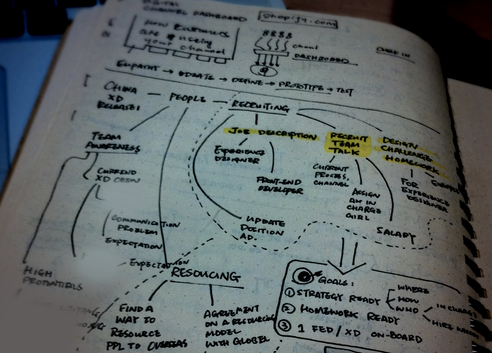

一不小心，ThoughtWorks的设计已经经历了五个年头，2011年7月的时候，我从英国回来，来自全世界各大区最新任命的设计负责人，讨论了如何将设计引入到这间传统技术咨询公司的业务引擎中。在回来的飞机上，我画了这样一幅草图：

在草图的上部，我把当时还未流行的设计思维模型作为了设计团队的基石，尝试在Empathy、Ideate、Define、Prototype、Test每个环节定义能力和服务。在下面是当时设计团队的现状，除我之外，近200人的中国公司里只有一位设计师和一位前端工程师，当时国内市场还未打开，于是当时的策略变得非常简单，更加积极地招聘和将现有设计师尽可能放在交付上。
于是我们有了第一个招募广告，那时候手绘的风格还没有流行，我在微博和博客上转发了第一份广告：
这里面写着：要好奇但思维得有调理、英文不要太差微话唠、爱设计爱学习、会一些手绘可HTML/CSS不是必须、能接受去不同国家工作。这样一个招聘的「聘」字不会学、简单一个「I'm UX」都出现语法错误的广告并没有引起什么关注。
但不管怎么样，快进到现在，这支团队有40人那么多，最开始出现在那张纸上的名字都已经不在；第一次参加伦敦会议的12个人里，只有两人依然在ThoughtWorks工作；甚至在一直当作榜样跟随的导师已经离开人世；我也早已不承担设计主管的职务——五年竟然发生了那么多。
半个月以前，我和这个团队最年轻的设计师在一起，关于上一个五年，我已经讲了太多，我来讲讲下一个五年。
避免竞争才是最好的竞争
与其思考我们如何才能更有竞争力，不如思考如何才能避免竞争——如何做到「客户在市场上找不到类似的服务提供商，却又觉得有价值」而非「为客户提供更有竞争力的服务体验」。
任何一个市场都在趋近于成熟，市场上的服务提供商一定会越来越同质，这是经典的「红海竞争理论」，我们目前所面对的「竞争对手（即设计咨询公司）」无一不追随以下商业逻辑：
- 从一种专业技能开始（几乎所有设计咨询公司的创始人都具有某种专业技能）；
- 由专业技能演化出专业服务（几乎所有设计咨询公司都从某种专业设计服务开始）；
- 扩充专业服务的问题域（例如从用户研究到产品设计再到产品策略）；
- 围绕新的问题域构建新的理念（无论是以什么为中心的设计）。
所有人的竞争体现在：
- 专业技能是否强大；
- 专业服务是否专业；
- 问题域是否广阔和有效；
- 理念对应新的问题域是否合理。
可怕的是，每年都有更具有专业技能年轻设计师出现、那些世界一流设计专业服务公司的设计师在不断提升专业服务的专业度、所有人都号称自己走到问题域的最顶端、每年都在产生新的、和淘汰旧的设计理念。
这也是为什么在这个行业里，每几年就会有一间新的设计咨询公司脱颖而出、每几年就有一间旧的设计咨询公司面临淘汰和被收购，那么我们要不要进入到这个序列中去？
这也是为什么一直以来，我们所强调的，是「不同」、而不是「更好」，这解释了为什么他们有高大上的设计环境、和看起来炫酷的设计项目、以及你为什么常年在出差、并和客户在一起做没那么有趣的设计。前者并不一定等同于「更好」、后者一定代表着「不同」。
不同、而不是更好。
理解这个逻辑，是所有ThoughtWorks设计师的共识，所有的服务都应该围绕在「不同」，其次才是「更好」；所有你应该思考的，是如何成为一个「与众不同」的设计职场人，而不是追随这个人才市场上的主流。「不同」的你以及「不同」的业务，让我们避免竞争带来的「天然衰退」。
为真实世界设计
上个月我在伦敦，我带着一支设计团队在为第一线的建筑工程师做设计，头脑里想着这样一个场景：我们把产出的设计放在画板上，在午休时间让大家进行讨论和投票。真实的情况是：根本没有人理你，所有人告诉你，你只有3分钟。
这才是真实世界的设计环境。
这让我思考，无论你如何强制自己相信自己在为「真实世界设计」，「真实世界」都在用最羞辱和残酷的方式「打你设计师的脸」。
三个月以前，我给一家公司做设计提案审稿的工作，非常荣幸地，我看了多份来自中国本土和世界一流设计咨询公司的设计提案，并不好意思地将他们全部否定，因为没有一个在为真实世界设计，全是「设计师有限世界观下扭曲的表达」，既不是真实世界、也不是真实表达。
人、系统、环境、文化、技术、关系、利益、规则都是真实世界的不同元素，我们所宣称的「以客户为中心」的设计并不是真实世界的全部；另一方面，世界并没有像我们曾经相信的那样「趋同」——美国激烈的社会矛盾、英国的脱欧都体现出历史并没有一条共同的道路，即并没有一个「理想未来」，而更多是一道光谱，在这道光谱上，真实世界的元素都在变化，这意味着「为一个理想未来设计」的破产，设计师需要把自己置身于光谱之中。
世界如此，商业同样在发生变革，所有人都在说「商业即技术（所有商业公司都是技术公司）」的潜台词是：「技术不再是一次性购买的投入、而是资产」，设计也是如此。试想这样一个场景：
当所有企业都不把设计当成一次性投入、而是资产的时候，会怎么样？
可以确定的是，对于设计人才的需要就变成：
- 在真实上下文中和外界趋势和变革中寻找机会；
- 拥抱真实的商业环境并接受限制和善于平衡；
- 兼具有效（Solving Problem）和合理（Making Sense）。
而你今天忍受的、我们所做的「不同」，都是为了培养这样的设计人才做准备，因此，「为真实世界设计」不是一种设计理想，它是为未来企业格局变化做的战略性准备。
寻找自己的旅程
最后，我依然想回到ThoughtWorks的使命，我们所有人，首先是ThoughtWorker，其次才是ThoughtWorks的设计师，之前并没有强调，是因为让一个新形态存活并独立成长要比融入更重要，而现在，是时候思考自己作为一个TW设计师应该有的使命感。
一群以IT革命者身份的人建立了这间公司，「社会实验」的烙印深深打在这间公司每个人身上，这个烙印，来自于对自己个人旅程（Personal Journey）的找寻。
旅程无关于开始、也无关于结束，我没有优秀的设计教育背景、也没有令人骄傲的设计成绩，更没有想过成为谁、做成什么事，我只希望对这个世界有更多的认识而已，大量的博客，也许都是自说自话，但是「心安、方能理得」，如果顺道能让设计师获得一些启发，便是更好。对我来说，这就是我的个人旅程。
至少有几个方向，我觉得是有趣的、并可能在ThoughtWorks这个平台上实现的：
首先是设计界的性别不平等：最近发生的事情，让人气愤，更无奈地是，大家所讨论的大多是「讨论女性容貌在设计大会这样的场合不合适」，而忽略了一个现实：「尽管以女性为主的设计行业，女性依然得不到基本的尊重、并缺少机会」，那么我们能否为女性设计师和企业树立优秀的榜样？
其次是设计界为消费主义设计的导向：在中国社会整体向右走的趋势下， 还有许多底层的社会问题没有得到足够的关注，我们能否做一个「向右走、却向左看」的设计师，帮助底层叙事、社会和经济公正？
再次是成为批判先锋：任何设计风潮中，总少不了对现实担忧、制造纠结和冲突的一批人，他们从另外一个角度推动了设计行业的发展，以互联网为基础的「科技设计Design in Tech」行业很少有主流观点之外的批判性思考，我们是否能够为这个行业带来足够的批判性？
每个人的个人旅程让我们走出自己，到「真实世界设计」，同时造就了我们的「不同」；而这份难能可贵的「不同」造就了我们作为一个商业模式的「不同」；最终它将带领我们走完下一个五年。
那么，下一个五年再见。